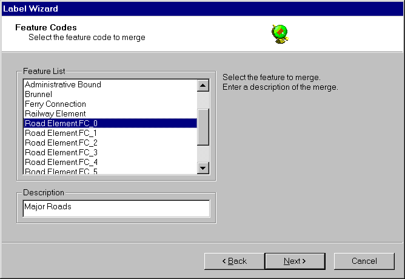
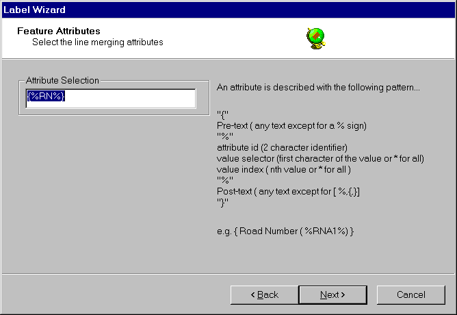
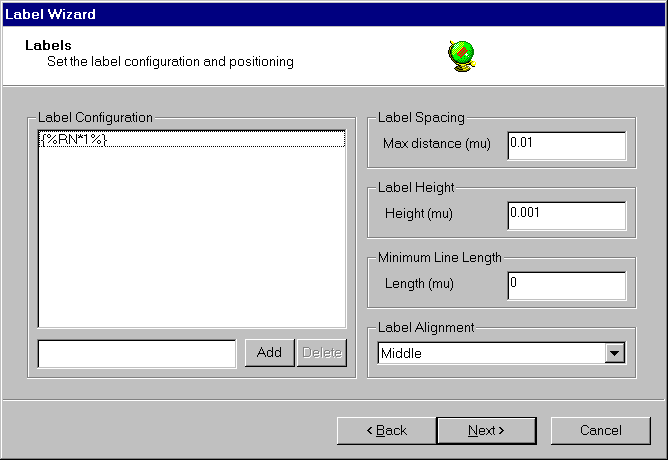
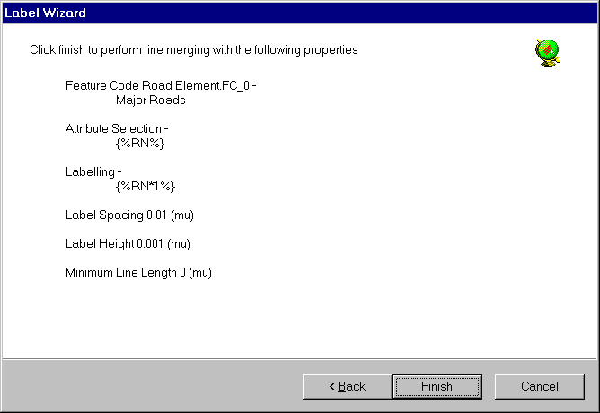

The label definition wizard provides a simple step by step approach to creating labels.

The welcome page simply presents a starting point. Select next to continue.

The feature code selection page allows the user to select which feature to merge and produce the labels for.
The feature list displays a list of possible feature codes to perform line merging upon. Select the feature to merge by clicking upon the list. A feature must be selected before moving to the next wizard page.
The description specifies the text that will be displayed in the label definition list in the vector configuration panel. A description must be entered and must be unique before moving to the next wizard page.

The feature attributes selection page allows the user to select the common attributes which will be used to merge the selected features. Only features with the same selected attribute value will be merged.
The attributes to be used for the line merge operation must be defined in the attribute selection box using the label definition syntax . The label definition is used to identify line features of a similar type. In the case above line features with the same "RN" attributes value will be merged.
More information of the label definition is given below. A selection must be entered before moving on to the next wizard page. If the attribute selection string is incorrect an error message will be displayed.

The label configuration panel allows the user to indicate which labels are to be placed on the merged line, the spacing between each of the labels and various attributes of the generated text.
The label configuration list contains a list of user configured label definitions. A new label may be created in the edit box using the label definition syntax and added to the list with the add button. Unwanted labels may be removed by selecting them in the list and clicking delete. At least one label must be entered in the list before moving to the next wizard page.
Label spacing controls the placement of labels by setting the maximum distance that they are to be placed apart. The label spacing is defined in map units (NB. that map units for most source formats are degrees). Typically in Europe a spacing of 0.001 is about 100 metres.
Label height sets the size of the label text in Map Units.
Minimum line length controls the minimum length of the merged line (in map units ) which is to be labelled. Setting this value prevents excessive number of labels being generated for very short line features.
Label alignment sets the alignment of the label text in relation to the line that it is placed upon. A value must be selected in the list before moving to the next wizard page.

The completion page gives a summary of the selections made by the user.
Finish adds the new label definition to the label definition list in the vector configuration panel.
Cancel discards the add label definition operation.
Labels will not be generated until you click OK in the dataset properties panel.
Copyright © 1998 to 2025 by Envitia Group PLC.